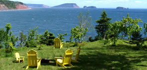
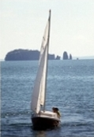

Download as PDF
Download as PDFYour dreams are waiting at Rockcliffe By-the-Sea
At Rockcliffe By-the-Sea, our community of year-round ocean front properties is unique. The land's natural terracing allows each wooded 2-3 acre lot both privacy and a spectacular ocean views. These ocean front properties range from 50 to 350 feet above sea level. Beach access, trails, protective covenants, private roads and a home-owners' association ensure Rockcliffe will always retain its beauty and peaceful character.
In today's pressure-cooker world of continuous change, the permanence of history and nature can provide a comforting anchor. Nova Scotia's Parrsboro Shore offers both-in abundance. Our ocean front properties are in a land of spectacular geology where fossil hunters discover traces of the world's smallest dinosaurs. It's also a land of myth and mystery. Legends tell of the Mi'kmaq god Glooscap creating the offshore islands and controlling the mighty Fundy tides.
Mighty indeed! Fundy's tides are the highest in the world. Twice daily, 100 billion tonnes of water sweep in and out of the Bay, scouring fantastic shapes in the land and providing feeding grounds for an amazing range of birds, fish, and marine mammals. Watch from your ocean front properties as sea, land and sky supply an ever-changing panorama.